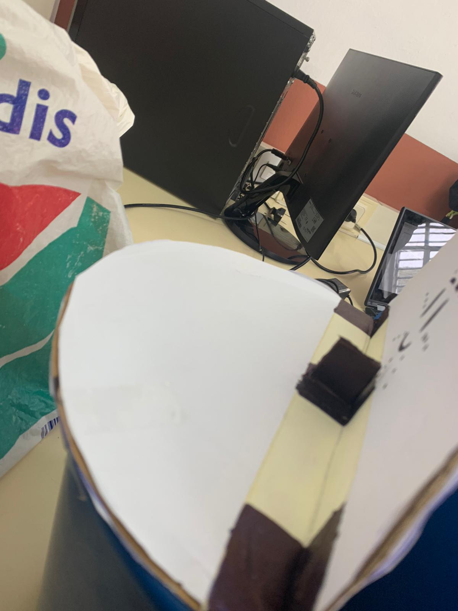
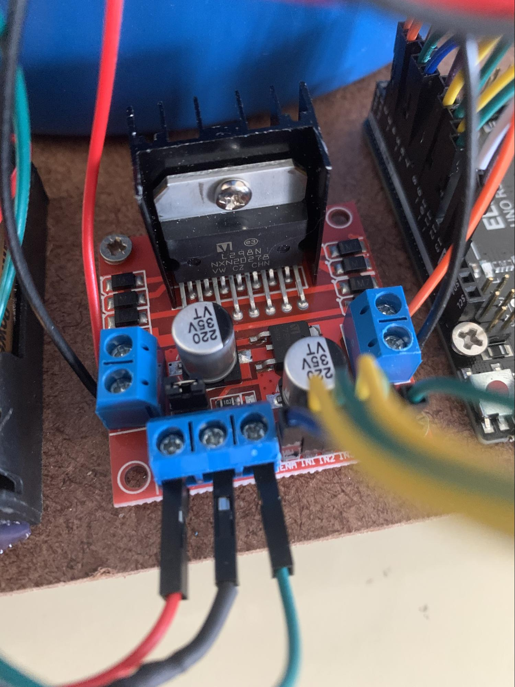

SMART BIN
Estos son los pasos necesarios para completar el robot
PASOS
Primera semana
Hicimos la tapa con cartones cortados por la mitad con la forma del cubo y los pusimos con celo para que se pueda doblar.
También le pusimos un tope para que cuando se abra no se caiga la tapa para atrás y pueda volver a cerrarse.

Segunda semana
Aquí empezamos conectado en sensor de ultrasonidos a la placa de arduino: cable azul:5V - cable blanco: GND - cable gris: En el pin 6 - cable morado: En el pin 5

Así se vería con el sensor conectado.
Aquí añadimos también los cables del servomotor: cable rojo: 3.3V - cable marron: GND - cable naranja: En el pin 7
Aquí tendríamos todo conectado correctamente

Tercera semana
Pegamos el servomotor a la tapa y con el código que pusimos el dia anterior la tapa ya se abre automáticamente
Hicimos 2 agujeros en el cubo para poder poner dentro el sensor
Cuarta semana
Pensamos en poner ruedas. En un principio no lo teníamos claro. Para ello necesitamos una tabla de madera fina para aguantar la papelera, un portapilas y las ruedas con motor DC 3-6V.
Pero dos de las ruedas no funcionaban y era por que la placa no soportaba 4 motores con ruedas y entonces debimoms cambiar 2 ruedas por una rueda pequeña sin motor.
Quinta semana
1
2
3
4

5
6
7
Sexta semana
Mejoramos el diseño de nuestra papelera., pusimos todos los componentes por afuera
El controlador de arduino, aqui conectamos los motores de cada rueda, el iterruptor y el altavoz a las pilas

Aqui tenemos el porta pilas de 4 pilas conectado a el interruptor y a el controlador.
Aqui tenemos el interruptor para encender y apagar el robot que esta conectado a las pilas y a el controlador.

Tambien le pusimos una luz enfrente haciendo referencia a que es la nariz y cuando enciende el arduino enciende la nariz de color rojo.
Como serian todos los cables por dentro